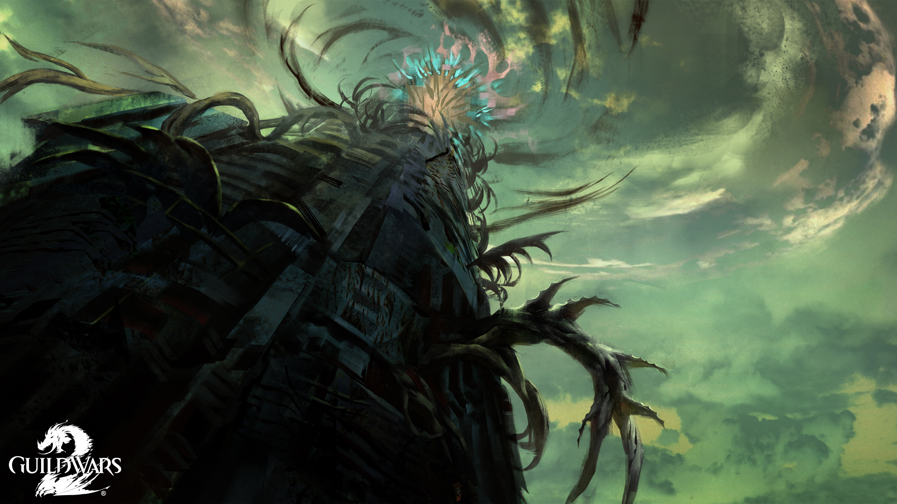
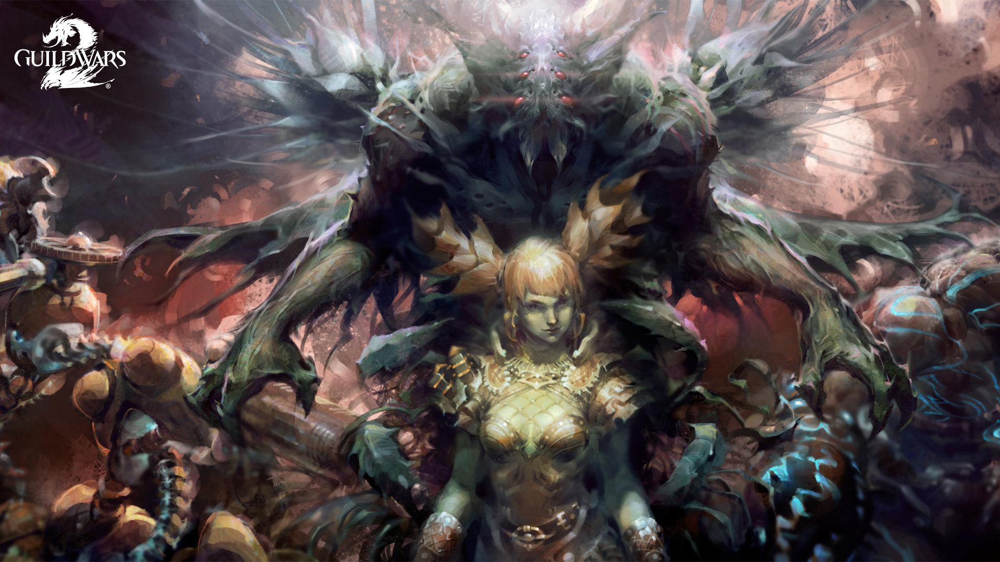
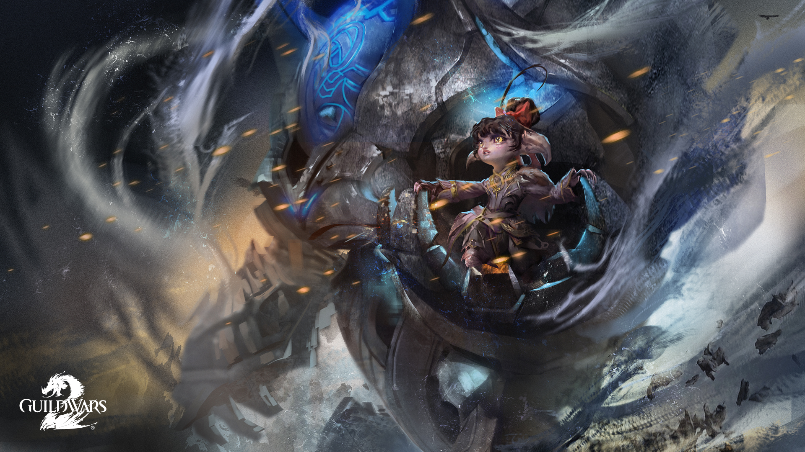

Flame and Frost
Refugees begin to arrive from the north, bearing tales of outlandish raiders. The commander rallies to the aid of new allies and begins to uncover traces of a threat to all of Tyria.
— In-game description
In the Season of the Zephyr, 1326 AE, strange storms began to brew over the Shiverpeaks while charr and norn refugees crawl from the wreckage of their homes in the Wayfarer Foothills and Diessa Plateau, struggling to find shelter in the south. Refugees kept sprawling unto the capitals Hoelbrak and the Black Citadel for the norn and charr, respectively. The Wolfborn and Adamant Guard were unable to gather any information about the attacks from the traumatized refugees for weeks. As time went by, the information that could be gathered didn't make sense and was passed off as shock; many saying that dredge were sighted in the attack, however they were seen using fire magic. The unusual weather patterns were later discovered to be caused by steam erupting from underground, wreaking havoc with the air temperature and humidity. However, the cause for the steam was still unknown.
After the influx of refugees, many sought new shelter. A good number of refugees began traveling to Lion's Arch where a generous benefactor was providing supplies within the city's walls. Later on, the Consortium was discovered to be the generous benefactors, which caused some to distrust the trading company's generosity due to their previous records. The Consortium was set to give the refugees a new home in Southsun Cove.
After the initial attacks, the perpetrators' assaults started to become more brazen, and sightings of Flame Legion charr and dredge became increasingly common. The Flame Legion were noticed using dredge technology causing speculation of an alliance. It was later confirmed by survivors that the Flame Legion and dredge were working together in the assaults. After their discovery, the Molten Alliance, as they were called, began spying on the locals to gather information. The Black Citadel convened a war council to assess the situation and what actions should be taken. Due to the publicity of the attacks, the Order of Whispers and the Vigil started to contribute against the alliance. The Order of Whispers sent a double agent to gather information from the inside while the Vigil chose to locate the hideout of this alliance.
During this time, a young norn traveled to the Black Citadel to request assistance for the defense of his homestead, Cragstead, which was recently captured by the Alliance. However, he was turned away as the charr were spread thin and couldn't spare any soldiers, but also because the young norn, named Braham, claimed he was the son of the legendary Eir Stegalkin and the late Borje the Sun Chaser. Rytlock Brimstone, not believing the norn, dismissed him as a liar and sent him to Hoelbrak. When Braham arrived at the norn capital, he was again denied any aid by Knut Whitebear. The leader of the norn capital feared that the city would be the next target and preferred not to scatter the forces away from the city. Whitebear decided to reinforce the defenses of the city instead of sending men out in the field. Braham was later discovered to hold resentment towards his mother Eir for reasons unknown. He later chose to retake his homestead with only a few allies on his quest. Braham was able to retake Cragstead with the Commander's help, however many were taken hostage to an unknown location, but ultimately bolstered the homestead's morale.
 While the Legions' war council was in session, a gladium charr who lost all of her warband in a mining accident, Rox, was sent to retake Nolan Hatchery as part of a test as she wanted to be accepted into Rytlock's warband, the Stone Warband. The Nolan Hatchery was a strategic stronghold for the Legions as it was a main supply of siege devourers. With the aid of the Commander, Rox was able to re-secure the Nolan Hatchery and befriend an albino baby devourer named Frostbite, however they too were unable to save everyone.
While the Legions' war council was in session, a gladium charr who lost all of her warband in a mining accident, Rox, was sent to retake Nolan Hatchery as part of a test as she wanted to be accepted into Rytlock's warband, the Stone Warband. The Nolan Hatchery was a strategic stronghold for the Legions as it was a main supply of siege devourers. With the aid of the Commander, Rox was able to re-secure the Nolan Hatchery and befriend an albino baby devourer named Frostbite, however they too were unable to save everyone.
The Order of Whispers was able to plant a double agent within the alliance and gathered valuable information. Agent Brandubh, of the Whispers was able to discover that the alliance has begun to dig underground east, south, and west. Prisoners were being taken every day; some put in pens and others used for weapons testing the unstable, but undeniably powerful Flame and dredge technology combination. The dredge technology was altered to be used by the Flame charr, and flame shamans have begun using transformations on the dredge. However, cracks in the alliance were beginning to show as the charr did not like being so deep underground, away from the sun. Reason for the alliance is still unknown. Something pushed these two factions together.
After a few months, the Vigil were able to find the entrance to the Molten base and moved in. With the aid of Rox, Braham and the Commander, the Vigil raided the weapon facilities. The cause for the steam was discovered to be the Alliance's use of fire technology to mine underground. They were able to cave in the facilities by detonating the caverns, crippling the Molten Alliance in the aftermath. In the final days of the war, dredge and Flame Legion captives who were interrogated revealed that the alliance had been run by a city dweller. This person's whereabouts and aliases were unknown at this time.
Dragon Bash
You may not know me, but I know you. I'm calling upon you because you're capable in the face of danger. If you consider yourself a force for good in this world, then I implore you to attend the Dragon Bash ceremony in Lion's Arch. I've heard whispers about a threat to the Ship's Council and, if left unchecked, to the city itself. I'd intervene myself, but circumstances prevent it.
I'd wish you luck, but luck is what fools and idiots require to stay alive. You, I believe, are neither. I will surely contact you again,
—E
the first annual Dragon Bash festival was held to honor the defiant spirit of Tyria against the Elder Dragons. Dragon Bash was inspired by the old Canthan Dragon Festival, but with a twist to fit the modern day realities. The Ship's Council hosted the event to celebrate the collective victories against the dragons-past, present, and future. The festival saw a decoration of the city, night time fireworks, and activities. However, some consider the celebration of dragons an insult; that it is a disgrace to everyone fighting the dragons, the lives of those sacrificed should be acknowledged, not the collective thought of the Elder Dragons. Others protests this fancy celebration is an ineffective cost as is causing the hardships of job security to go down even further since the karka invasion of the past year.
One of the main activities was Dragon Ball Arena, a combat arena created by a sylvari named Finolla. She gathered the concept while studying the Bane of the Black Citadel where she met the gladium Volak Ironsnout. With Volak's help, Finolla was able to raise the gold to create the arena and was later purchased by the Ship's Council to be part of the first annual Dragon Bash.
The main attraction of the festival is the effigy lighting ceremony. The ceremony is to represent the ferocious nature the races have shown against the Elder Dragons. Before the ceremony begins, the Commander receives a notification from an individual named 'E' claiming there is a threat to the council. The mysterious person(s) explain that they would intervene but circumstances prevent it. As the ceremony begins, Captain Magnus the Bloody-Handed introduced the three members of the Ship's Council that will be present for the effigy lighting; Captain Anne Reid, Captain Tokk, and Captain Theo Ashford. Magnus then asked the cultural representatives, members of the races who have lost their kin to the hands of the Elder Dragons, to hand over the memorials of their kin to the pyre so the lighting may begin. When all the items have been placed an unusual discharge of electrical energy ignites the pyre and explodes. The explosion injured the charr cultural representative, Garrot Ambercowl and the three council members. The Lionguard were instantly on the scene, with Inspector Ellen Kiel at the helm. As Kiel and the Commander attempted to expel the chaos, a woman from the crowd volunteered to try to heal the wounded. As this was happening the three council members were placed in a dolyak cart and were sent to Fort Marriner for healing. During the attack, many cultural representatives fled the scene.
 It was later announced that one of the council members did not survive the attack; Captain Theo Ashford was killed. In response, Logan Thackeray located Marjory Delaqua in the Dead End bar, in the Eastern Commons of Divinity's Reach. Thackeray explains that Ashford was a old friend and he wants to know who was behind the attack personally. Logan pays her handsomely for the investigation.
It was later announced that one of the council members did not survive the attack; Captain Theo Ashford was killed. In response, Logan Thackeray located Marjory Delaqua in the Dead End bar, in the Eastern Commons of Divinity's Reach. Thackeray explains that Ashford was a old friend and he wants to know who was behind the attack personally. Logan pays her handsomely for the investigation.
It was later discovered by the Commander that Marjory Delaqua was formerly part of the Ministry Guard, but during an investigation of a child's murder, she was grabbed by 'E' from behind (she couldn't see 'E'). She is then told there are forces in this world that would take us all down unless we stop them together. After that encounter she sometimes gets contacted by the mysterious person.
In Lion's Arch, Delaqua met up with Kiel, offering her services towards the investigation. Marjory, after being accepted, uses a Tassi box (a device by Magister Tassi that was similar to the Candy-Powered Matter Meter used to discover Mad King Thorn's past) to detect any energy fluctuations. It was revealed that the energy discharge was triggered and was not accidental, and that Ambercowl's body showed signs of arcane residue. The Tassi box was then used to detect if any individuals also had similar arcane residue. It was discovered that the woman who attempted to heal the charr, Mai Trin, had the same energy. She explained her plan was to fill the empty seat after a council member was taken care of. When the Commander and allies attempted to capture her, her Aetherblade pirates appeared to even the odds. Ultimately, Mai Trin was able to get away.
Sky Pirates
In Lion's Arch, a festival is announced to celebrate the dragon's defeat. The commander arrives for the opening ceremony, but is soon plunged into a darker investigation...
— In-game description
After the attack, Inspector Ellen Kiel spearheaded the investigation into the murder of the councillor, Captain Theo Ashford, and later with the escape of the fugitive, Mai Trin, the Lionguard began a search for her hideout. In response to these series of events, Captain Magnus the Bloody-Handed made a calculated decision to continue the Dragon Bash festival so fear and chaos would not escalate. During this time, Trin's Aetherblade pirates began to raid nearby holographic projectors, which were created by the asura to be used to project holographic symbols of dragons for the ongoing festival.
Inspector Ellen Kiel successfully located the hideout of the runaway fugitive Mai Trin and her mysterious 'Aetherblade pirates'. Thereafter, the Commander and Ellen Kiel raided the hideout located at Diverse Ledges in the outskirts of Lion's Arch. The hideout was using holographic technology to create an illusionary wall to deter intruders. Throughout the raid, they were met with deadly resistance by the Aetherblade pirates. The sewer system quickly turned into a shanty town created by the pirates within the mountain range as a base. The hideout continued around, facing the Sea of Sorrows but could not be detected from the outside due to the stolen holographic technology. Later, throughout the spiralling base the Inquest started to appear beside the pirates, defending them. At the top of the mountain, the Lionguard found Mai Trin with her First Mate, Horrik discussing their fear of an individual named 'Scarlet' for unsuccessfully opening a council seat. The duo were attempting escape in airship vessels that resembled the Pact's airships. However, Kiel and the Commander were successful in stopping their escape and were able to destroy the vessels.
After the capture of Mai Trin, Kiel began the interrogation process but the Aetherblade Captain stayed tightlipped, however some information was gathered from the base. The Lion's Arch records had no information on the pirates, though the Lionguard were able to capture some of their low-ranking members for interrogation. The Lionguard discovered that the Inquest were able to financially and scientifically back up the Aetherblade pirates. The Inquest were able to incorporate air magic in the pirates arsenal allowing them access to the skies. The vessels the sky pirates used were also stolen from the Pact's base and later used to build their own designs. The Aetherblades were also able, with the help of the Inquest, to create new weaponry unseen in Tyria: a long and narrow blade that they called a rapier which had been proven to be an effective weapon, and a handheld cannon used by Horrik. No other information was gathered about the mysterious individual they called 'Scarlet'.
 A second Aetherblade base was discovered in Broadhollow Bluffs, outside Lion's Arch. The Commander set out to plunder the second hideout and learned that it was the garage for another Aetherblade airship. This new information confirmed that the Aetherblade pirates are much bigger than one base within Lion's Arch. Meanwhile, in the city, Magnus discovered that Theo Ashford's second was killed weeks prior in the events of the Molten Alliance. Because there would be an open council seat, the Ship's Council were forced to have a council election for a new captain. In reply, Magnus nominated Inspector Ellen Kiel for the position. However, as only captains can be nominated, Magnus commandeered the abandoned Aetherblade airship for Kiel, effectively making her eligible for the election.
A second Aetherblade base was discovered in Broadhollow Bluffs, outside Lion's Arch. The Commander set out to plunder the second hideout and learned that it was the garage for another Aetherblade airship. This new information confirmed that the Aetherblade pirates are much bigger than one base within Lion's Arch. Meanwhile, in the city, Magnus discovered that Theo Ashford's second was killed weeks prior in the events of the Molten Alliance. Because there would be an open council seat, the Ship's Council were forced to have a council election for a new captain. In reply, Magnus nominated Inspector Ellen Kiel for the position. However, as only captains can be nominated, Magnus commandeered the abandoned Aetherblade airship for Kiel, effectively making her eligible for the election.
Queen's Jubilee
You Are Invited to the Jubilee Closing Ceremony by Royal Proclamation,
Queen Jennah's Jubilee will conclude with a closing ceremony in Divinity's Reach. Her Majesty will be in attendance, along with her esteemed guests and emissaries from across Tyria.
Her Majesty will close the festivities with remarks at the new coliseum, built on the former site of the Great Collapse in Divinity's Reach.
May the Six Gods watch over you, and may they continue to bless the benevolent Queen of Kryta.
In 1316 AE, Queen Jennah was crowned as the Krytan Queen, and ascended the throne. In 1326, on the anniversary of her coronation, Queen Jennah hosted a jubilee to celebrate her ten year reign as the Krytan monarch. The Queen of Kryta reclaimed the Great Collapse within Divinity's Reach, and constructed a towering pavilion in the symbol of a griffon; the symbol on Kryta's crest. Although the celebration was in the name of Jennah's tenth anniversary as Queen, she also wanted to hold the jubilee to show the other nations that humanity has not 'fallen'. Emissaries from all the nations in Tyria were invited to marvel at the ingenuity of humanity's survival.
Along with the pavilion, the Crown also unveiled humanity's next leap in technology; the Watchknights. The Watchknights resemble golems in the fact that they are sentient being tailored for commands by their superiors. Unlike the Asuran golemancy techniques, the Watchknights use rotating cogs similar to that found in a watch, hence the name given to the sentinels. Where the golemancers use magitech to control their golems, Watchknights are controlled through verbal commands issued by mesmer magic. The creatures were used throughout the pavilion as guards and as attractions.
Under the pavilion sat the main attraction of the jubilee; a circular arena spoked into six separate areas, each defining a moment of hardship that the Krytan nation has endured: Flame Legion, bandits, Ogres, Destroyers, pirates, and centaurs. As it was dangerous (and immoral) to have such sentient creatures locked up for sport, the Watchknights were able to express their second functionality, an ability to change form into such creatures through mesmeric illusions.
 As the majority of emissaries began to arrive, Queen Jennah commenced the Opening Ceremony. Jennah revealed the arena and its testament to the Kryta's will to survive, as well as the Watchknights and its leap in technology for the human race. Within the opening ceremony, the Ministry Guard were not seen, as Jennah has forbade them to enter the pavilion, in response to their numerous scandals. Many champions of Kryta arrived to the ceremony at Jennah's call to test the Watchknights strength, including Rytlock Brimstone. However, the Blood Legion Tribune outsourced the duty to Rox, who brought Braham along.The Commander was there as well. Ultimately, the Queen chose her own personal champion, Captain Logan Thackeray of the Seraph Guards to fight one to the Watchknights. With mesmer magic by Countess Anise of the Shining Blade, the Watchknight continuously changed forms, but Logan was able to hold off the sentinel. Nevertheless, the Watchknight returned to fight, now in the form of Rytlock, Logan's old friend. When Anise attempted to shut down the Watchknight she found that the commands have been overridden. On cue, Aetherblade pirates rained down on the ceremony causing general chaos around the arena. Throughout the fighting, Anise deduced that whoever overwrote the Watchknight's commands must be nearby. She later noticed a mysterious figure perched on one of the columns. By order of the Queen, Rox attempted to shoot down the stranger with her bow, however the mysterious figure continued to teleport and toy with the young charr. Nevertheless, Rox was able to get a hit after several attempts, which drove the stranger to escape.
As the majority of emissaries began to arrive, Queen Jennah commenced the Opening Ceremony. Jennah revealed the arena and its testament to the Kryta's will to survive, as well as the Watchknights and its leap in technology for the human race. Within the opening ceremony, the Ministry Guard were not seen, as Jennah has forbade them to enter the pavilion, in response to their numerous scandals. Many champions of Kryta arrived to the ceremony at Jennah's call to test the Watchknights strength, including Rytlock Brimstone. However, the Blood Legion Tribune outsourced the duty to Rox, who brought Braham along.The Commander was there as well. Ultimately, the Queen chose her own personal champion, Captain Logan Thackeray of the Seraph Guards to fight one to the Watchknights. With mesmer magic by Countess Anise of the Shining Blade, the Watchknight continuously changed forms, but Logan was able to hold off the sentinel. Nevertheless, the Watchknight returned to fight, now in the form of Rytlock, Logan's old friend. When Anise attempted to shut down the Watchknight she found that the commands have been overridden. On cue, Aetherblade pirates rained down on the ceremony causing general chaos around the arena. Throughout the fighting, Anise deduced that whoever overwrote the Watchknight's commands must be nearby. She later noticed a mysterious figure perched on one of the columns. By order of the Queen, Rox attempted to shoot down the stranger with her bow, however the mysterious figure continued to teleport and toy with the young charr. Nevertheless, Rox was able to get a hit after several attempts, which drove the stranger to escape.
Clockwork Chaos
Queen Jennah announces a new celebration in Divinity's Reach, but strange machinations are afoot.
— In-game description
After the attack from the unknown perpetrator and the Aetherblades, the Seraph recommended the Queen to cancel the celebration for fear of her safety. However, the Shining Blade insisted that the attacker desired to disrupt the Jubilee. Ultimately, the Queen chose not to close the pavilion believing that by shutting down the pavilion, humanity would be shown as weak and fallen (which was one of the primary reasons for the celebration). In response, the Seraph Guard, under orders of Logan Thackeray began an investigation as well as doubled the patrolling men within the city.
Although the authorities were on high alert for a reappearance by the mysterious stranger, most of the jubilee was uneventful until the closing ceremony. The Closing Ceremony commenced with Queen Jennah taking the stage of the pavilion, giving her speech on humanity's resolve, unity, and strength. However, the Queen's speech was quickly interrupted by the same fugitive; this time with her hood down and her face revealed to the world. The stranger was revealed to be a female sylvari naming herself Scarlet Briar. She laughed at the 'endurance' and 'trials' of the human race and began explaining how fragile the Krytan society truly is. To prove her point, the sylvari was somehow able to control the Krytan Watchknights, and twist them into twisted, horrific machinery. As the horrors began to cause chaos around the pavilion, Scarlet declared that there were four bombs planted 'to keep things lively', and attempted to kidnap the queen. As the maniacal sylvari shot an explosive bullet onto the stage in an attempt to capture the Queen, Lord Faren attempted to rescue her. It was later revealed that the Queen on stage commencing the closing ceremony was actually a mesmeric illusion created by Anise in an attempt to bait the mysterious fugitive. The plan was successful, but as the knowledge of the plan was only limited to the Queen and the Shining Blade, Lord Faren was prized with a fall into the arena level of the pavilion. During this time, the Commander was able to successfully disarm the four bombs and Watchknights around the pavilion. Scarlet, however, did not seem fazed by the progress of these events as she revealed the location of a fifth bomb located at the evacuation point for the Seraph and citizens alike. The Seraph failed to reach the disarm in time, causing large amounts of civilian and Seraph casualties. After the bombing, Scarlet traveled to the secluded arena level of the pavilion, effectively locking her inside the arena with a number of hostages while she kept taunting and berating the Queen's 'endurance' and 'trials'.
As chaos continued, the Commander was tasked with finding a way into the arena, while the Shining Blade recommended to know more about the terrorist to better combat her unpredictable nature. An emissary from Rata Sum, Vorpp was able to distinguish that the sylvari was able to travel into the pavilion through teleportation, similar to that seen by his own kind. The asura concluded that by reverse engineering her portals, the Commander and their allies may gain access to the arena floor.
As time passed, more information about Scarlet and her history began to surface. It was discovered that upon waking from the Dream of Dreams, the sylvari was inundated by the 'complex systems of small, interlocking parts that affected one another in an ever changing dance'; fascinated by this life itself that she was now a part of. Upon awakening, the sylvari was given the name Ceara and was told of her purpose as the Pale Tree directed of her. Ceara almost felt offended by the linear lifestyle her people had to endure. Choosing to follow her own path, the sylvari left the Grove after eight years of voracious study to explore the world and learn about the ever changing mechanisms that define it. She became a solitary scholar, first learning the smith crafts of the norn in Hoelbrak that defined their culture. She was accepted as an apprentice to a norn named Beigarth who taught her the basics of smithing and metallurgy. Just like her study at the Grove, the lessons at the norn's capital were not a full meal capable of sating her hunger for knowledge. She left Hoelbrak in a winter's time, even under Beigarth's insistence to teach her more advanced methods. Next she continued her hermit-like lifestyle to charr lands where she learn of projectiles and firearms from a gladium named Asagai, but just as before, the scholar abandoned her work only learning basic and some intermediate skills. Ceara finally decided to travel to Rata Sum, hoping that the asura may sate her hunger.
 Being accepted by the colleges of Rata Sum became a difficult obstacle for the non asura. However, when the sylvari shown her skills with rudimentary golemancy, she was allowed a simple Dynamics course to assess her capabilities. Ceara believed she was being accepted for her knowledge, but this wasn't the case (although she was exceptionally intelligent for a sylvari); she was accepted because of the asura's curiosity to study the sentient plantlings since the race's awakening. Within two years she was shown to be quite intelligent and completed the shortened course template she was given for both Dynamics and Statics. When given the same opportunity in Synergetics, Ceara found the field as boundless as her interest. The Headmaster of Synergetics, Headmaster Omadd, taught her the theories and basis of the Eternal Alchemy; that it was a metamagical engine or a transcendent equation to be solved. However, Ceara believed that the Eternal Alchemy was a key to 'access the basic fabric of reality itself'. Her thesis was not received well by the Arcane Council, nevertheless, Ceara did not care as she was separating herself from their rigid collegiate system. She then joined the Inquest which allowed her access to more knowledge that the colleges were 'scared' of or deemed 'dangerous to explore'. Later Omadd was able to track her down when she studied with the Michotl tribe, backing her thesis and wanting to explore it further. They both studied and prepared an experiment that, Omadd predicted, would 'transcend the physical body and delve into the metaphysical vortex of reality'.
Being accepted by the colleges of Rata Sum became a difficult obstacle for the non asura. However, when the sylvari shown her skills with rudimentary golemancy, she was allowed a simple Dynamics course to assess her capabilities. Ceara believed she was being accepted for her knowledge, but this wasn't the case (although she was exceptionally intelligent for a sylvari); she was accepted because of the asura's curiosity to study the sentient plantlings since the race's awakening. Within two years she was shown to be quite intelligent and completed the shortened course template she was given for both Dynamics and Statics. When given the same opportunity in Synergetics, Ceara found the field as boundless as her interest. The Headmaster of Synergetics, Headmaster Omadd, taught her the theories and basis of the Eternal Alchemy; that it was a metamagical engine or a transcendent equation to be solved. However, Ceara believed that the Eternal Alchemy was a key to 'access the basic fabric of reality itself'. Her thesis was not received well by the Arcane Council, nevertheless, Ceara did not care as she was separating herself from their rigid collegiate system. She then joined the Inquest which allowed her access to more knowledge that the colleges were 'scared' of or deemed 'dangerous to explore'. Later Omadd was able to track her down when she studied with the Michotl tribe, backing her thesis and wanting to explore it further. They both studied and prepared an experiment that, Omadd predicted, would 'transcend the physical body and delve into the metaphysical vortex of reality'.
Ceara eagerly waited to set up the isolation chamber so she could see the inner mechanisms of this world. Inside the machine, she saw the universe stretched out before her, and then Tyria. But then the voice of the Pale Tree pleaded the sylvari not to go on; insisting that by seeking to comprehend the forces that shape them, she will unleash them. At that moment, Ceara's view changed to the Pale Tree in the Grove with thorn vines creeping around the bark of the tree. Ceara realized that the vines were her, understanding her purpose. The Pale Tree attempted to plead with her once more, telling her if she was not one with what she was born to be, she would be lost and dangerous.
Upon leaving the vision, the sylvari convulsed inside the machine. When she woke up she explained to Omadd that she saw 'everything'. She then declared to the asura that her name now was Scarlet Briar, going against the conventions of the sylvari culture. Scarlet then killed Omadd.
After some time, Vorpp was able to reverse engineer a portal into the arena level by gathering information from the teleportation technology found in Broadhollow Bluffs. The asuran emissary was able to conclude that Scarlet used the same teleportation methods seen through the steam machines. How and why Scarlet was able to use this ability is still unanswered. When the portal was open, the Commander was able to rescue some of the civilians, however Scarlet, who declared the Commander to be her number one enemy, was prepared using Aetherblade ships to make a getaway.
Tower of Nightmares
In Kessex Hills, evil is brewing. Responding to a missive from Kasmeer, the commander finds the land ravaged by a dark tower looming out of the lake...
— In-game description
As Mad King's Thorn day continued on, the local Seraph documented a sudden change in the forestation around the Viathan Lake in Kryta. Not long after, a veil appeared within the lake, hiding the workings within. The radical changes within the area attracted an agent from the Order of Whispers and scholars from the Durmand Priory and Divinity's Reach. The agent was able to notice increase of activity from the local krait. The veil was thought to be an mesmeric illusion, and as such, aid from Lady Kasmeer Meade called.
Eventually, Kasmeer Meade was able to conclude that a mesmer had formed the illusion. As such, proper preparations went into countering the spell. Thereafter, Kasmeer was able to crack the veil dropping the curtains on a massive tower built of woods gathered from the forests around the area, guarding an enormous plant. During the time, Sergeant Walters of the Seraph was stationed to protect the duo, but was intercepted by a group of Nightmare Courtiers and local krait. The Toxic Alliance were able to cause a horrific hallucination on the Seraph contingent that cost most the ability to continue. After unveiling the tower, Meade and Delaqua were ambushed by the alliance, spearheaded by a Krait Oratuss, for the disruption of their workings. After the ambush was fended off, Marjory expressed her distaste of the area and wanted to be back at Divinity's Reach, while Kasmeer showed intrigue in the tower and its mesmeric capabilities. Kasmeer surmised that the tower was guarding something valuable; something dangerous.
Later, a camp at Thunder Ridge was erected as a base point of operations for the Vigil, Order of Whispers, and the others involved. The Orders were quick to realize (with unfortunate results), that the tower spouted a destructive toxin that clouded the entire region; causing mass hallucinations and sickness. A group from the Orders was sent into the tower to scout, but they never returned. As the tower continued to affect the region, offshoot seedlings began to sprout throughout the province, affecting the wildlife and poisoning the areas. In response, The Vigil and the Order of Whispers were tasked with taking down the offshoots plantlings.
 During this time, a Durmand Priory Scholar, Ela Makkay went to work at deducing a reason for the unlikely alliance of krait and Nightmare Courtiers. It was revealed that the krait were a powerful race that lived in pillared cities far out in the ocean, but recently moved into shallower waters. The krait were excited at the prospect of regaining their power, which Makkay theorizes, means the kraits' lost prophets are finally returning. Ela was also able to conclude that the nightmare sylvari that are currently aiding the krait are only an offshoot of the true factions, surmising the courtiers are a fringe group of the organization.At the same time, Marjory Delaqua continued to work for an antitoxin that would counter the effects of the tower, while continuously showing fear for Kasmeer's safety who showed interest in the Toxic Alliance's use of mesmeric abilities. By gathering samples from the offshoots, Marjory was able to create an effective antitoxin for the tower allowing relative safety into the heart of the fortress.
The Nightmares Within
The noxious clouds surrounding the Tower of Nightmares have been cleared. Marjory and Kasmeer have entered the structure and are requesting help from all available heroes.
Due to the antitoxin that was created by Marjory Delaqua, the three Orders were able to engineer air purifiers to stop the toxins from getting into their systems, effectively making the entrance to the nightmare tower relatively safe. Within the tower, the collective force of the Seraph, the Vigil, the Order of Whispers, and the Durmand Priory were able to chart the tower's defenses, however, the losses were severe. Meanwhile, the toxin continued to spread throughout the region, lingering longer in the air causing the hallucinations to become even more severe. Broken past and increased anxiety came to resurface within the minds of the victims. The tower continued the affects on all who inhaled the toxin.
While traversing the tower, illusions and hallucinations continued to blur the minds of its victims leading them astray. Lady Kasmeer Meade took the lead, knowing the effects of illusions better than the average soldier. The tower was discovered not to be a fortified location, but a wall covering the huge toxic plant on all sides. The tower was created to defend the plant until its full purpose comes to fruition, which at this time, is unknown. It was revealed that the tower was being defended not only by the newly created Toxic Alliance, but also by Aetherblade pirates, Molten Alliance, and clockwork minions. In the meantime, Durmand Priory Scholar, Ela Makkay was able to conclude that the krait joined with the Nightmare Court fringe group because they were given obelisk shards as proof of the returned prophets. She further analyzed that the obelisk shards have similar magical radiation to that of the Bloodstones.
Finally, Marjory and Kasmeer, as well as the Commander were able to reach the top of the tower. Marjory theorizes that Scarlet might be behind the tower, given that her other creations have been sighted during their ascension. Upon reaching the top of the tower, the trio entered the heart of the tower keen in injecting the antitoxin and ending its effects on the province. Within the tower, it was discovered that Scarlet went to the splintered Nightmare Court faction first. It was also discovered that the Oratuss of the krait allied only to bring the prophets back into this world. Upon reaching the heart of the tower, the Oratuss was overheard fighting with a Courtier about infidels being in the presence of their prophets. When Marjory and Kasmeer and the Commander were exposed, Scarlet Briar appeared via teleportation. The crazed sylvari began to berate the allies as she took a sample of the toxic seeds. Before any action could be taken, a swollen cocoon began to open. Scarlet made her escape while a young krait sprouted from the cocoon. The alliance, believing this to be the prophet, protected it at all costs. It was noted that the krait began to age and grow at an alarming rate, becoming an adult in a matter of minutes. The 'hybrid' was also noted to have sylvari-like leaves and thorns. However, the contingent was able to kill the creature as it shouted, "No! I cannot be the last of my kind!". Whether this creature was truly a prophet of the krait is yet to be realized.

After the creatures death, Marjory injected the antitoxin, however, as more antitoxin was used it became clear that the tower began to react; learning to counter the effects and to become stronger. Marjory was able to search the heart and locate a hidden passage that led to a chamber. Inside the chamber, they found technology from all the alliance Scarlet created; Molten, Aetherblade, Watchknights, and now Toxic. It was discovered that the toxic seedlings are immune to heat and that the Watchknights at the jubilee were set to be controlled by audio commands. When pieces of all the creations were thrown into a forge, a ball of energy was created, which Marjory used in combination with the antitoxin to get through the new barriers. When the improved antitoxin was injected, the tower began to groan as if it was alive. As the final toxin reached the plants system, it began to crumble, forcing the whole tower to collapse.
In the aftermath of the tower, many of the inhabitants of the area became displaced, becoming refugees and needing new homes. Some Consortium members were spotted attempting to negotiate with the refugees but were always turned down by the Lionguard taking care of them. At the Thunder Ridge campsite, Marjory and Kasmeer met Rox and Braham (who were part of the assault force into the tower) for the first time. The effects of the tower still continue to linger within the province, albeit in a weakened state.
The Origins of Madness
I'm asking friends to meet me in Lornar's Pass, where Scarlet's dropped some new type of twisted monstrosity from one of her portals. Local Priory observers are convinces that she's planning to set off a doomsday weapon in their remote end of the Shiverpeaks. They say she's recalling her twisted watchwork troops from all over Tyria to power her weapon test, and I say that we need to shut it down before a lot of innocents get killed.
One more thing. You know those mysterious probe devices that have been found all over Tyria? I've heard that the Vigil are looking into three of those discovered only recently in Bloodtide Coast. These are dangerous times, and I'm sure those Vigil crusaders would appreciate your help reaching the investigation sites.
—Marjory Delaqua
In the new year of 1327 AE, in the Season of the Zephyr, The Vigil began documenting many mysterious probes that were found throughout Tyria; their purpose remaining in secrecy. Within False River Valley in the Shiverpeaks, a grand flying object was sighted portalling in a twisted monstrosity. The giant marionette, resembling a Watchknight, was chained to the flying object. The Durmand Priory surmised that it is a weapon of sorts and were tasked with shutting it down.
It was revealed that the marionette was created by Scarlet Briar, using it as a weapons test for unknown reasons. It was also discovered that the marionette needed clockwork horrors to charge up the weapon so it can be powerful enough to engulf a whole region. Portals were created for the clockwork to reach the power regulators so that they can power the machine. The Priory were able to configure the portal to allow allied access to the power regulators. When the regulators were destroyed the chains anchoring the marionette were severed and the machine was stalled, albeit with substantial losses to the allies.
Joining the fight against the machine, was the Commander, Marjory, Kasmeer, Rox, and Braham whom all have been affected by Scarlet's schemes, as well as a young asuran prodigy named Taimi with her golem Scruffy. Taimi showed extreme admiration for Scarlet and her work, explaining that being a homicidal maniac does not make you any less of a genius in the eyes of the young prodigy.
After the defeat of the marionette, Rox theorizes that Scarlet doesn't care whether she wins or loses against them. She explains that she might just be fighting to 'cull the herd'. When the group expressed their concern over the mysterious probes, Taimi reassured them that they are not offensive, but are only used to search for something. Later, Logan Thackeray arrived on the scene only to run into Taimi. The Captain of the Seraph expressed his concern of a child being alone on the battlefield, which Taimi responded by saying that her parents are dead. Logan then agreed to take the small asura to Lion's Arch. Meanwhile Rytlock Brimstone and a group of charr have been studying the probes, deducing that the probes are searching for something magical and huge.
 In Lion's Arch, Scholar Ela Makkay of the Durmand Priory began to inform all able bodies of the outlaw Scarlet Briar. The scholar explained the history of the sylvari, explaining what she saw beyond this world broke her mind. She also revealed that the Priory located one of Scarlet's labs under the Durmand Priory. During this time, Rox met up Rytlock Brimstone about her trail into the Tribune's famous Stone Warband. Rytlock explained that Rox would definitely get into the warband if she killed Scarlet Briar. Later, Braham met up with Rox explaining his concern that if she does get into the warband, she will become as tied up as the rest in the secretive warband are. Braham left Rox to ponder only to be interrupted by Logan and Taimi. Logan expressed his distaste that a child was on the battlefield, believing that Braham is her guardian. However, Taimi continued to berate the norn and convincing Logan that they both know each other. Later, Logan met with Marjory Delaqua in concern to Kasmeer's feeling on this day. Marjory also asked the Captain if he knows anyone by the name of 'E', which Logan didn't. It was also revealed that the Shining Blade have been keeping the Queen tightly close due to the recent events and leaving Logan far away from her. Later, it was discovered that Kasmeer was a former noble of Divinity's Reach whose family went into bankruptcy after Kyle, her brother, gambled all the money. After being bankrupt, her father took the blame for Kyle being taken to prison. Their house and belongings were repossessed, but a ministry guard took pity on the now poor noble. He was allowed to keep any one item so Kasmeer took a stuffed bear that was sentimentally valuable but not financially. Later, her father dies in debtor's prison.
In Lion's Arch, Scholar Ela Makkay of the Durmand Priory began to inform all able bodies of the outlaw Scarlet Briar. The scholar explained the history of the sylvari, explaining what she saw beyond this world broke her mind. She also revealed that the Priory located one of Scarlet's labs under the Durmand Priory. During this time, Rox met up Rytlock Brimstone about her trail into the Tribune's famous Stone Warband. Rytlock explained that Rox would definitely get into the warband if she killed Scarlet Briar. Later, Braham met up with Rox explaining his concern that if she does get into the warband, she will become as tied up as the rest in the secretive warband are. Braham left Rox to ponder only to be interrupted by Logan and Taimi. Logan expressed his distaste that a child was on the battlefield, believing that Braham is her guardian. However, Taimi continued to berate the norn and convincing Logan that they both know each other. Later, Logan met with Marjory Delaqua in concern to Kasmeer's feeling on this day. Marjory also asked the Captain if he knows anyone by the name of 'E', which Logan didn't. It was also revealed that the Shining Blade have been keeping the Queen tightly close due to the recent events and leaving Logan far away from her. Later, it was discovered that Kasmeer was a former noble of Divinity's Reach whose family went into bankruptcy after Kyle, her brother, gambled all the money. After being bankrupt, her father took the blame for Kyle being taken to prison. Their house and belongings were repossessed, but a ministry guard took pity on the now poor noble. He was allowed to keep any one item so Kasmeer took a stuffed bear that was sentimentally valuable but not financially. Later, her father dies in debtor's prison.
The Commander later went to Scarlet's lair to find information on the sylvari. Many notable things were found within the lair. Many drawing are shown of the Pale Tree being wrapped by thorns, and a line up of attempted alliance created by the sylvari. Tables lined up of equipment such as a miniature probe, clockwork schematics and an antitoxin injector. They also found a portrait of Omadd, Scarlet's mentor, on the wall with knives and rips throughout. The most notable item found was a journal written by the sylvari herself. The journal documented the sylvari as she was continuously tormented by an entity in her nightmares. The entity communicated to the sylvari through images of death, destruction, and destiny. Scarlet later was consumed by the entity and was no longer scared. The Commander set out to find when this journal was written.
Edge of the Mists.png The Edge of the Mists
The Edge of the Mists
Bad news—Scarlet's Aetherblade thugs successfully freed Mai Trin from the Fort Marriner brig and escaped into the Mists via a new portal. I'd like you to confer with Sheriff Siriam in Fort Marriner about the breakout to see if there's anything we can use to track down Mai and figure out what she's doing for Scarlet. Good luck, and thanks.
—Captain Ellen Kiel
At the same time as the Twisted Marionette threatened Lornar's Pass Aetherblade pirates were able to free their Captain, Mai Trin. During the dead-of-night escape, former vigilante Canach deliberately chose not to escape with them. After Trin's escape, a message from Scarlet was played to the Aetherblade Captain, telling her that she has work for her in the Mists. The Aetherblades were then able to create a portal to the Mists for escape. In the commotion, Taimi ran after the captain through the portal in hopes of getting close to Scarlet, with Braham reluctantly following behind. The next day, the Lionguard questioned Canach on his non-intervention in the matter. Canach explained that he and Scarlet may share a similar fixation on self-determination but that he considers himself above it, seeking to define his role in the world while she seeks to define the world for her roles. It was revealed that the sylvari did not wish to escape and instead accepted his punishment. Later, the probe under Lion's Arch turned green foreboding something unknown.
In the Dead End Bar in Divinity's Reach the Commander, Marjory, Kasmeer, and Rox took note of the green probe. They decided they must gather information on the crazed sylvari to better understand what might be in store for the future. Marjory, who is revealed to be in good standing with the Durmand Priory, issued for help gathering all the information necessary to conduct an investigation. It was also revealed that Marjory and Kasmeer met each other months ago shortly after Meade's bankruptcy. They have also been a pair for quite some time. Additionally, Rox was discovered to have had a mate who was killed in the mining accident that took her whole warband.
In a new part of the Mists, Braham and Taimi followed Mai Trin but Taimi's golem was quickly damaged. The Commander learned that Taimi has a critical medical condition that has impaired her use of her legs. She assumes that the condition will soon take the rest of her body. It is also revealed that she is a ward of Zojja and Vorrp. She explains that she admires Scarlet's stance on freedom; going beyond the realms of what should be capable for her kind. She also surmises that the probes are after 'transcendent magic channels' that span the globe, or ley lines as they are more commonly referred to. She concludes that the ley lines are analogous to ocean currents or weather patterns, but stirring magic instead of water or air. The ley lines are paths that magic chooses to follow. In normal situations they cannot be seen or touched but they're real.

After Marjory has called in her favors from the Durmand Priory, she - with the help of Vorrp and Kasmeer and the Commander- begins an investigation of the past year. A piece of Omadd's machine was scavenged and Vorpp deduces that the machine did not in fact break Scarlet's mind but instead only revealed a piece of it that was always existing. It was also revealed, after studying Molten Alliance technology, that the probes follow the same technology and that they are probably tasked with an automated search for ley lines. The attack on the Captain's Council was revealed to be an attempt of Scarlet's to get a puppet on the Council to weaken its defenses from the inside. The Aetherblades were discovered to be intended for establishing air superiority in a war. It was also discovered that the steam creatures' designs show stark similarities to Scarlet's clockwork machines, explaining how she could take control of them. When studying the toxin from the Nightmare Tower, Marjory discovered that it was resistant to the antitoxin that was used beforehand. It is deduced that Scarlet deliberately lured them into creating an antitoxin so she can create a more potent mix, capable of taking out an entire city. Scarlet's Journal was later revealed to have timestamps dating the entries from 1322 AE to 1323 AE. It was discovered that something is gradually taking control of her. Scarlet believes her plans to be her own design, while the entity is probably feeding them to her.
With this information, the four were able to conclude that Scarlet is planning an unstoppable raid on Lion's Arch. Information was sent to Kiel to push for air defenses, but the other Captain's Council members denied it believing that they have stopped her ploys before and they can do so again.
Escape from Lion's Arch
To all Tyrians,
This is a general emergency warning. A few hours ago, a massive flying platform has entered Sanctum Harbor, bringing destruction and spreading a lethal miasma over the city. Furthermore, Aetherblade airships, Molten portals, and Toxic forces are overwhelming the Lionguard response.
Some of the citizenry is still trapped inside the city limits. We are calling on available heroes to assist in the evacuation efforts. Lion's Arch needs you. If you can, please report to the forward camps in Gendarran Fields, Bloodtide Coast, and Lornar's Pass at once.
—Captain's Council, Lion's Arch
Then came the fateful day to Lion's Arch that would be known to all who called it home. During this time, Aetherblade airships snuck into Lion's Arch from above and began the assault on the free city, destroying the asura gates to stop reinforcements. After the surprise attack from the skies, Molten and Toxic Alliance infantry began to swarm the city. The Molten burrowed up through the ground and The Toxic arrived by sea. As the invasion progressed, a grand flying platform entered Sanctum Harbor from the skies. The machine began to drill unto the same exact position of the probe in Lion's Arch.
A few hours passed as the factions continued to overwhelm the Lionguard. They decided to desperately hold rally points within the city as citizens escaped to nearby refugee camps. Rox and Braham, alongside the Commander and several Lionguard, held Trader's Forum as civilians attempted to escape. The factions were disorganized, and possessed little strategy, but possessed greater numbers. The defenders of Lion's Arch realized that these factions were securing the city only to keep the Lionguard distracted from the machine in the harbor.
As the invasion continued, the factions began to unleash a miasma into the air that slowly engulfed the region. Kasmeer and Marjory held a rally point in the Postern Ward as an emergency asura gate was activated to the Durmand Priory. The Lionguard held their main force in the south, in Fort Marriner.
Some citizens were able to flee the city, including Evon Gnashblade. The merchant of the Black Lion Trading Company attempted to flee the city herding his valuable merchant dolyaks with him. The main gates of the city were destroyed in the beginning assault except one. The gate was reconfigured and protected by Captain Shud. Gnashblade went through the remaining gate and was somehow able to close the gate behind him, effectively trapping Shud and the citizens within the city.
The workers at the lighthouse also attempted to flee except Priest Graidy, the keeper of the place. The lighthouse, which was stationed to ferry ships into the harbor, was used to warn approaching vessels about the danger in the city. Despite the protest by his daughter, Ellyna Graidy, Priest Graidy stayed in the lighthouse while the others escaped. His fate is unknown at this time.
Captain Magnus the Bloody-Handed spearheaded the Lionguard defense in Fort Marriner. During a skirmish with the Molten Alliance, Captain Magnus was injured, losing an eye. The attack was repelled as Captain Ellen Kiel was able to get to the city via her previously owned Aetherblade airship. The miasma soon reached critical levels and forced the Lionguard to escape under Kiel's orders. Magnus, determined to hold the fort, which was never lost in all his time alive, denied the order. However, Kiel stood up to her now equal and forced Magnus on the airship along with Canach and Lawson Marriner. The remaining Lionguard and the others that survived fled the city.
As the result of the attack many camps were erected surrounding the city, the most prominent being in Vigil Keep, Bouldermouth Vale, and Stormbluff Isle. In response to the attack, Divinity's Reach was able to send their hot air balloons to aid in the relief effort. The Vigil chose to aid the wounded and opened up their doors to the refugees. Within the camp, the healers were swamped with dealing with the wounded from force trauma, combat wounds, and most of all, the miasma gas. They concluded that the gas was able to kill one out of every two patients. The gas was also observed to be highly caustic; most expire in agony when inhaled. The field hospital was stationed in the open air (to the dismay of the healing squad), due to the Vigil's infirmary being packed with wounded.
 Within the field hospital, Heal-o-Tron (formerly Ho-Ho-Tron) willingly volunteered to the help the wounded. Heal-o-Tron was able to observe that the infection appeared to be counteracted by 'subaether harmonics in a localized energy field'. Later on, the Seraph appeared within the camp looking for the golem, demanding that it was aiding and abetting Scarlet Briar. When the Seraph attempted to capture the golem, it escaped to the Vigil Keep.
Within the field hospital, Heal-o-Tron (formerly Ho-Ho-Tron) willingly volunteered to the help the wounded. Heal-o-Tron was able to observe that the infection appeared to be counteracted by 'subaether harmonics in a localized energy field'. Later on, the Seraph appeared within the camp looking for the golem, demanding that it was aiding and abetting Scarlet Briar. When the Seraph attempted to capture the golem, it escaped to the Vigil Keep.
Within the Vigil Keep, Evon Gnashblade continued to show strong resentment towards Ellen Kiel and Magnus, determined that if they heeded his warnings, the city would've been saved. Later on, the charr merchant was conscripted into Lionguard services under emergency law. Since failure to cooperate would result in execution, Evon begrudgingly accepted, being upgraded to Quartermaster. It was later revealed that Evon's deputizing was Captain Ellen Kiel's idea. Meanwhile, Heal-o-Tron met up with Gnashblade and requested upgrades to his defensive unit (the golem asked for no weapons). Heal-o-Tron explained that he was going to aid in the assault against Scarlet to earn to goodwill of the Seraph. The golem, offering no gold for Evon's service, was going to be denied. However, Gnashblade theorized that this act might gain some attention of the Captain's Council, and so agreed to help.
Within the camp, Taimi continued to question the refugees about whether Scarlet was sighted in the attack of Lion's Arch. She explained to the Commander that she no longer wants to work with the mass murderer but only to observe her. It was also revealed that Zojja, her guardian, did not know she was at the Vigil Keep.
In the Bouldermouth Vale camp in Lornar's Pass, Kasmeer and Marjory waited until the miasma dissipated. They expressed their concern for the outcome, explaining for every person they evacuate, three more die. More was revealed about Marjory's history. She joined the Ministry Guard as soon as she was able. It was revealed that she regularly sees her mother and her sisters but not her father. She explained to Kasmeer that her father 'isn't like yours was'. Shortly after she quit the guard, she joined the Durmand Priory, knowing she could tap into a good source of information to be a detective. She expressed that the Order of Whispers were too secretive for her taste.
Within the same camp, the Priory observed that the gas weapon isn't the same as the nightmare pollen from the Tower of Nightmares. They also concluded that it doesn't correspond to any known antitoxin. They also discovered, through the hylek, that the poison can work its way out of a person's system—if in small doses. Later on, the Priory began to question the refugees, however they showed classic signs of mental trauma.
Battle for Lion's Arch
As the mysterious Scarlet Briar's schemes reach their climax, the commander and their allies gather in defense of Tyria.
— In-game description
As the days passed by, the miasma was pushed out into the Sea of Sorrows by the wind. The Lionguard were able to regroup with the three orders to storm into Lion's Arch to establish rally points and take the fight to Scarlet. The first group to re-enter the battlefield was the 14th Lionguard Security Force as they attempted to establish a foothold in the battered remains of their city. They were able to breach the city and hold Trader's Forum until reinforcements arrived.
When reinforcements arrived on the scene, Scarlet sent out her main assault knights, twisted forms of clockwork that made a mockery of the Rata Sum colleges. Magnus, now without his left eye, led the attack against the machines. Without the miasma the allies were able to gain ground closer to Scarlet's drill mechanism, the Breachmaker. However, with Scarlet still alive, Magnus theorized they will soon reach a stalemate. He ordered a Lionguard contingent, including Ellen Kiel, to board the airship and kill Scarlet once and for all. Rox, Braham, Kasmeer, Marjory and the Commander volunteered to enter the airship, as well as Heal-o-Tron (who was outfitted with defensive capabilities now).
Getting into the Breachmaker was difficult, however, the allies were able to reconfigure teleportation machines used by the assault knights to reach the airship. When the contingent arrived on the drill, Scarlet used a powerful hologram of herself against them. As the battle raged, the hologram began taxing on Scarlet's energy, so she opted to fight herself refusing to let the contingent disassemble her last line of defense. When the fighting continued beyond what Scarlet anticipated, she rerouted the power from the drilling mechanism to increase the Breachmaker's capacity to multitask. However, energy expulsion continued to be an issue for the sylvari as the contingent held their ground. She then resorted to fragmenting the hologram to lower its power usage. Finally, Scarlet ran out of patience, as opted to used all her energy into clearing the contingent. But ultimately the hologram was disassembled and Scarlet was injured in its process. She screamed as she escaped into the Breachmaker's lower levels, determined not to let the drilling fail.
In the disassembling, Kiel was injured and chose to retreat through the portal. Heal-o-Tron followed the captain choosing to heal the Lionguard instead of running after Scarlet. Rox, Braham, Kasmeer, Marjory and the Commander followed Scarlet to the lower depths of the Breachmaker, only to find the crazed sylvari on the ground attempting to hold her own. Braham told Rox to finish the job so she could finally get into the Stone Warband. When they caught up to Scarlet, she began to ask if any of them wondered why she began all the chaos and destruction. Braham denied the sylvari, choosing not to give her any fleeting satisfaction. She began to explain that 'Tyria will bow before a new master'. When she questioned what her fate was, Marjory drew her dagger and began to walk towards the downed engineer. Before Marjory could get the job done, Scarlet set off an explosion that threw all of them back.
In the explosion, Braham broke his leg while Rox was far enough behind to survive without fatal wounds. The norn told Rox to go after Scarlet for the Stone Warband, but she chose to stay with her injured friend instead. Kasmeer went to check on Marjory (who took the brunt of the blast). However, she was unmoving and unresponsive to Kasmeer. The mesmer believed her to be dead.
Kasmeer, enraged over the apparent death of her lover, began to attack Scarlet along with the Commander , ready to avenge Marjory Delaqua. Kasmeer continued to try to get near Scarlet, but the sylvari used all manner of grenades and explosives to keep the mesmer at bay. She expressed that she won't let anyone spoil what was inevitable. With illusions, Kasmeer was successful in distracting Scarlet Briar long enough for the Commander to deliver the killing blow to their sworn enemy. In her dying breath, the sylvari exclaimed that they were all fools in thinking her death saved them. During this time, Rox was able to check on Marjory. The charr was able to save the human from certain death. Braham explained that it was a good thing Rox stayed behind.
Over Scarlet's decaying body, the machine turned blue as the drill struck the ley lines. Under the Breachmaker, blue light poured into Lion's Arch as a line of light was seen moving into the outlying regions. The line of light continued to the Thaumanova Reactor and beyond. The light continued downwards as a pair of enormous teeth began to open. Mordremoth has awakened!
 The Breachmaker reached critical mass. It soon spiraled out of control and exploded. Fragments of the airship were sent through the ruined city of Lion's Arch, changing the very landscape and razing the ground itself.
The Breachmaker reached critical mass. It soon spiraled out of control and exploded. Fragments of the airship were sent through the ruined city of Lion's Arch, changing the very landscape and razing the ground itself.
As the battle ended and the invaders were driven out, a somber mood fell over the ruins. Squatters began to take to the former city looking for a place to stay, even after the advice from the Lionguard that the city is currently uninhabitable. Soon after, looters began to pick apart the city for anything they could find.
Within the ruins, three memorials were erected for those who had died in the battle of Lion's Arch, those who have gone missing in the attack, and finally those who showed great prowess and heroic attributes during the invasion. The first wall is a monument that displays the names of those citizens, Lionguard, and brave volunteers who fell during Scarlet's siege of Lion's Arch. The second wall showed all who perished in the attack. Near the wall is Ellyna Graidy, daughter of the late Priest Graidy. The priest was confirmed to have died in the attack when he chose to use the lighthouse to warn ships to stay away. The wall with the missing persons is filled with flyers and crude pictures inquiring about missing Lion's Arch citizens, some simple drawings by children who lost their parents. The last wall bears a list of names and an inscription that reads, "Let it be known that these brave souls saved Lion's Arch in its darkest hour. May history regard them as heroes."
Among the looters and gawkers, the Pact made an official appearance through the sylvari member Laranthir of the Wild. In Lion's Arch, he was there representing the Pact and, by extension, the orders. Laranthir explains that the reason the pact did not officially help save Lion's Arch is because that is not the mission of the orders. They have been tasked with slaying the Elder Dragons. Defending a city from an attack falls outside their charter. However when a dragon's cry was heard throughout the realm, the Pact decided to make an appearance. The Pact believes that Scarlet's drilling roused a dragon. Laranthir explains that if they had known that was her plan, they could have justified getting involved in the affairs of the independent city.
Meanwhile within the Dead End bar, in the Eastern Commons of Divinity's Reach, the Commander, Kasmeer, Marjory, Rox, and Braham had a celebration of their victory over Scarlet Briar. Braham is limping from his broken leg throughout the celebration. Later on, Taimi enters the bar to join the group. She explains that what heard throughout Tyria was a dragon's cry. They surmise that the ley lines were an ocean of magic and Scarlet threw a giant rock in the ocean, sending ripples out to the dragon. After a while, Seraph Belinda Delaqua entered the bar looking for her little sister, Marjory. She explains that she was sent by her mother to check up on her well-being. It was revealed that Marjory was very snooty growing up, as she often ordered all the other kids around even if she was the youngest. Belinda later left the bar, explaining she will be sent on a long expedition into the Brisban Wildlands in a week. A group of black-market traders have been disrupting the economy within Divinity's Reach, and reports state they are located in the wildlands. After she left, Taimi explains that Zojja was furious with her roaming the campsites. However the asura believes that Zojja does not care about her, but only about her record. If Taimi does well, it reflects positively on Zojja as her college mentor. Rox explains that she is hiding in the human bar from Rytlock Brimstone. She is afraid to report to the Tribune since she technically failed to kill Scarlet. So she has been ignoring his summons. So there the group sat, enjoying each other's company in this fragile time.